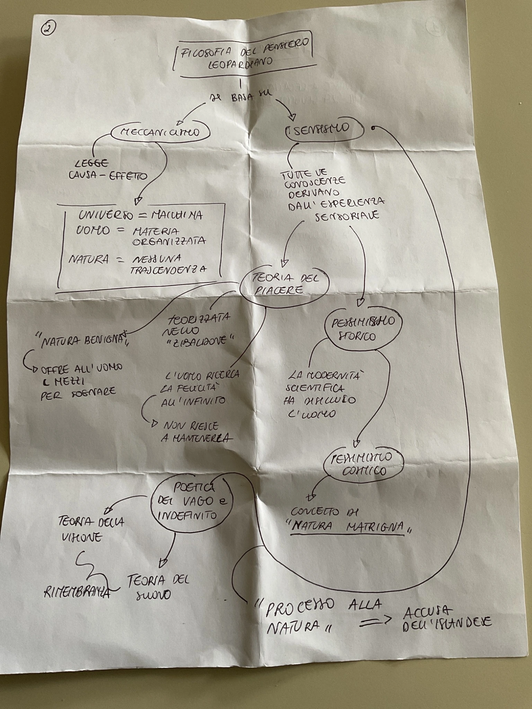

Filosofia del pensiero leopardiano
Tocca le aree evidenziate per aprire le pagine di approfondimento. Se un’area ti sembra “stretta”, puoi aprire l’argomento dal menu (☰).

Meccanicismo
Sensismo
Teoria del piacere
Pessimismo storico
Poetica vago/indefinito
Teoria visione/suono
Natura matrigna
Processo alla Natura
Dialogo Natura/Islandese
La ginestra
Le aree sensibili sono state posizionate sulle parole principali della tua mappa.